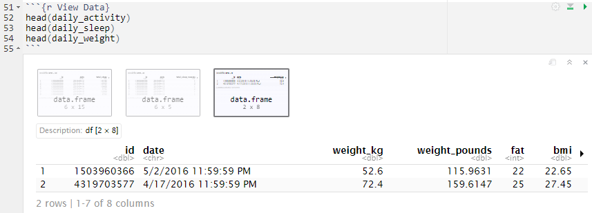
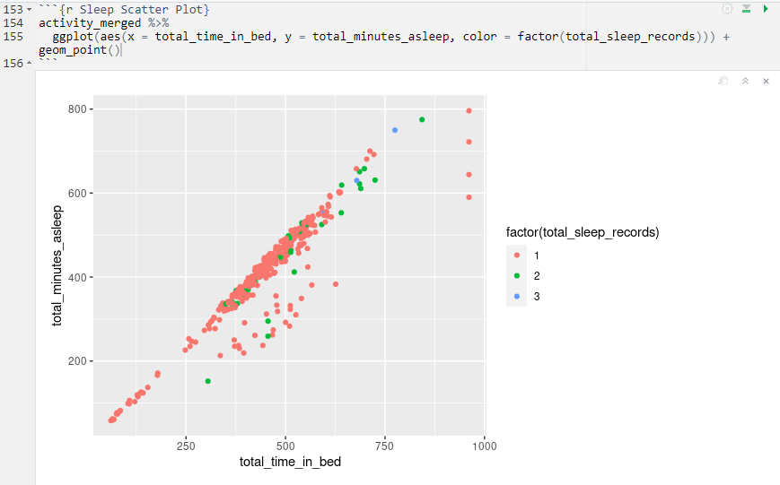

Bellabeat Project
Summary
This project was one of two preselected capstone ideas for the Google Data Analytics Certificate. The first one being about a bike company, while this one is about data from a health and wellness company called Bellabeat. The reason I chose this project rather than the other is because I a care about health and wellness, so this project really got me excited to learn about what I can learn about from this data and to test out the skills that I have learned from the Google Data Analytics course. Although the data does not come from Bellabeat itself but instead from Fitbit, we can use the data in order to provide meaningful insights on how Bellabeat could improve their products which include:
- The Bellabeat app which tracks users activity, sleep, stress, menstrual cycle, and mindful haibits.
- Bellabeat's smart products Leaf and Time which connects to the app and tracks activity, sleep and stress. And Spring, a water bottle that connects to the Bellabeat app in order to track hydration levels.
- Bellabeat membership which offers users 24/7 access to fully personalized guidance on nutrition, activity, sleep, health and beauty, and mindfulness based on their lifestyle and goals.
Data Preparation
The data comes from a from Kaggle uploaded by a user named Mobius. The data comes from Fitbit smartwatches from 33 individuals who consented to having their data being shared and used. The dataset contains personal data that includes calories, steps, heartrate, intensites,sleep and weight all ranging from seconds, minutes, hourly, and daily.
After downloading the dataset, I checked some of the data and decided that for the purpose of my analysis that I would only use data that has been recorded as daily. I booted up R studio and installed packages I thought would be neccessary and also loaded them. After doing so, I added the three tables that I thought I would need for this analysis which are the sleep table, the weight log table, and activity merged table which holds data including calories, steps, distance traveled, and activity minutes.
Afterwords I decided to run some code to get more familiar with the data.
Some things that were immediately noticeable were that all the dates in the tables were classified as characters instead of dates, and after running drop_na() on the weight log table there were only two participants left. Originally there were eight in the beginning but now there only 2. Most of the empty cells came from the Fat column, and after looking through the original data I decided that there was no good reason to include the table in the analysis, so most of my focus will be on the other two tables. Next, I deciced to fix the dates from both tables add new columns to the sleep and activity table called quality_sleep and quality_activity. According to health experts, humans need an average of 7-9 hours per day. So depending on how much sleep the person has gotten, then it would assign not_enough_sleep, good_sleep, or too_much_sleep. According to the CDC, Centers for Disease Control and Prevention, adults should get around 150 minutes of moderate to rigorous excercise per week while WHO, World Health Organization, recommends 150-300 minutes per week or 60 minutes per day for 5 days. For quality_activity, I set it so under 20 minutes assigns not very_active, above 60 minutes assigns very_active, and in between those two would assign active. Then I created a new table named activity_merged that would combine both sleep and activity table by the date and id column. I also created a new table that has the average of all the values in the table activity_merged and grouped by id. These two new tables are the ones that I will be mainly working with.
Analysis
First thing I wanted to check out was to check the relationship between how long it took for someone to fall asleep and activities. While preparing the data, I created a column that created the difference between two columns named total_minutes_asleep and total_time_in_bed which would give how long it took for someone to fall asleep. I made a scatter plot and ran some code to see whether if there was anything that immediately stood out.
Some things worth noting were that in the chart, there was a noticable and sizable cluster of dots that deviated from the rest in the middle. That means that cluster spent more time awake in bed than the rest. The code also revealed some interesting insights, on average everyone spent around 39 minutes awaken in bed which is higher than the average of 15-20 minutes it takes for someone to fall asleep. On the second code chunk group by id, we can see that there is quite a range of values. One person spent on average around 300 minutes awake in bed, while another spent around 167 minutes awake in bed. Aside from those two large outliers, the next highest ones are 52, 44, and 42 respectively. Next I wanted to create some more scatter plots to compare time awake in bed to total distance, steps, calories, and steps in order to see if there was a correlation.
Unfortunately there wasn't much correlation between time awake in bed and the other columns, however this time around I want to compare total time asleep column with the other columns in order to find a correlation.
The other charts had around the same results so I won't include them however this one had a decently strong correlation. This scatter plot compares sedentary minutes to total minutes asleep, and there appears to be a decently strong correlation. The more sedentary someone was, the less amount of sleep they recieved. When running the same code on the table activity_merged_avg that has everything grouped up by ID and has the averages, we can see that there is an even stronger correalation. Now I want to focus more on the activity_merged_avg table and the two columns that were created at the beginning which were quality_sleep and quality_activity

This time around I decided to create some pie charts since it would be better at showing how large or small the numbers are compared to each other. For quality sleep, we see that it is almost even the amount of people who get enough sleep and the ones that don't get enough, while there is only one individual who gets too much sleep. On the other hand, for quality activity it is quite even between all three categories. Next I want to see whether or not there is a relationship between quality sleep and quality activity.
For these chart I decided to do it for both tables activity_merged and activity_merged_avg. There does not appear to be a correlation for the chart with activity_merged_avg, with each bar showing an equal amount of people who are active, very_active, and not_very_active with the exception of the too_much_sleep bar. With an inconclusive chart, I wanted to the bar graph again but instead with the activity_merged table which holds daily data. In the second bar graph we can see how there seems to be a bit of correlation now in the bar graph. For the bar good_sleep, not_very_active makes up a bigger chunk of the bar and for the bar not_enough_sleep, very_active takes up a significant portion of the bar.
Conclusion
With the data I was unable to show definitive correlations, and with the final bar graphs it showed correlations that would go against common sense or reasoning. I believe with a larger data set more interesting insights could be learned, however it was fun to explore and there were some interesting things to learn. And to answer the business objective that was posed in the summary section, one way Bellabeat could improve their app is by showing how someone's activity level compares to others and maybe adding an incentive in order to encourage people to be more active. Some people love competition and others enjoy things that reward them for their effort like Snapchat's streak system or how a lot of mobile games have daily logins to encourage retention and form habits. Data was not given about Bellebeat's smart products Leaf and Time connects to the app and tracks activity, sleep and stress, however through the app it could show the correlation between stress and the amount of sleep you get. With the smart bottle Spring, it could show whether you get enough water compared to how active you are. This was my first case study and I know there are bound to be mistakes, but I enjoyed it and I know I am going to keep on learning more.